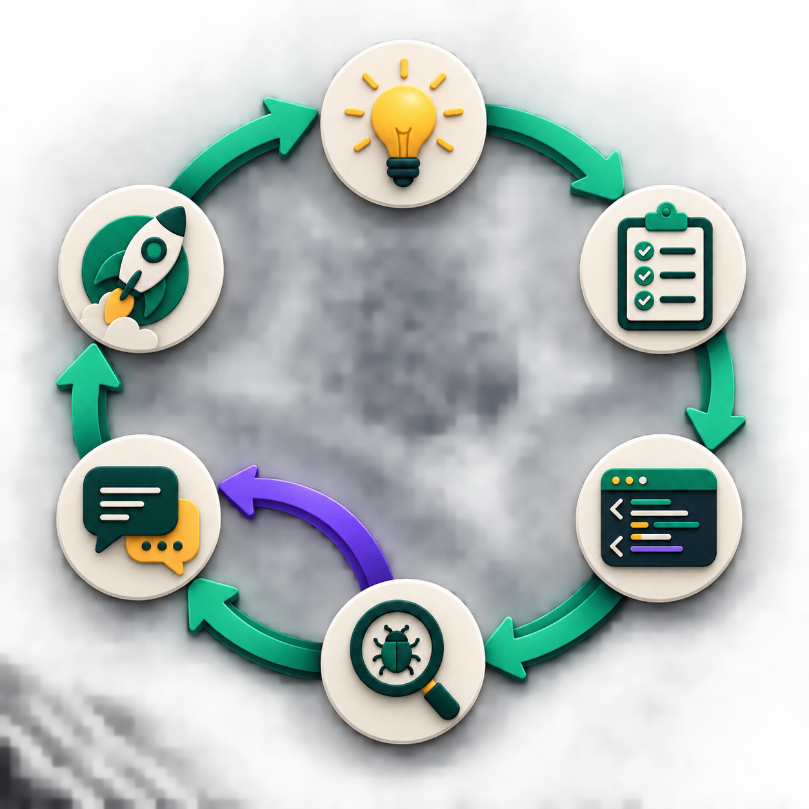

자동매매는 연습할 대상입니다. 오늘 익힌 개발 순서는 다른 프로젝트에서도 그대로 쓸 수 있습니다.
지금은 개념을 확인합니다 · 다음 붙여넣기는 강사 안내를 따릅니다
공통 실습 P4-00
MY_STRATEGY.md에서 오늘 바꿀 한 가지를 고릅니다
전략 원본을 읽고 → 오늘 다룰 한 트랙을 고르고 → 확인할 결과를 정합니다.
진입
어떤 종목을 볼까?
분석
AI가 무엇을 읽을까?
청산
언제 나올까?
리스크
얼마나 살까?
강사 시연
오늘 시연할 네 작업을 구현 순서와 확인할 결과로 먼저 정리합니다.
수강생 실습
MY_STRATEGY.md를 읽게 하고, 오늘 바꿀 규칙 하나를 정합니다.
수강생 자료 → P4-00 · 해당 번호의 text 블록 전체를 붙여넣으세요
공통 실습 P4-KIS · 읽기 전용 실제 데이터
KIS 실제 수급을 분석에 한 번 연결합니다
종목
005930
삼성전자 한 종목만 비교
환경
KIS real
App Key·Secret만 · 계좌번호 불필요
읽는 값
기관·외국인·개인
일별 순매수와 가격
바뀌는 곳
수급 섹션만
다른 분석은 그대로 유지
매매는 simulation · 주문·취소·정정·잔고·계좌 호출은 0회
강사 시연
005930의 가장 최근 영업일 수급만 읽고, 수급 섹션 전후를 비교합니다.
수강생 실습
KIS가 준비된 사람만 P4-KIS를 실행합니다. 나머지는 거래량 프록시로 합류합니다.
수강생 자료 → P4-KIS · 해당 번호의 text 블록 전체를 붙여넣으세요
개발 기초 · 전체 실행 지도
한 번 실행하면 다섯 단계가 차례로 움직입니다
이 지도를 먼저 보면 뒤에서 배우는 파일·함수·DB가 왜 필요한지 알 수 있습니다.
앞 단계의 결과가 다음 단계의 재료가 됩니다. 다음 장부터는 이 길을 실제 파일과 함수로 나눠 봅니다.
수강생 자료 → P4-01 · 해당 번호의 text 블록 전체를 붙여넣으세요
개발 기초 · 실제 디렉터리
프로젝트 폴더에는 역할별 파일이 모여 있습니다
lecture-prism/
├─ main.py
├─ screening.py
├─ analysis.py · analysis_agents.py
├─ buy_agent.py · trading.py
├─ feedback.py · db.py · dashboard.py
├─ brokers/ · prism_core/
├─ tests/
├─ lecture/ · docs/
└─ 강의자료/
어디를 볼까
무엇이 있나
원본 보기
GitHub·브라우저에서 파일을 열거나, 에이전트에게 담당 함수를 찾아 달라고 합니다.
필요한 만큼만
함수 주변 10~20줄과 파일·함수 이름, 입력·반환값, 다음 연결 지점만 봅니다.
바뀐 근거 보기
변경 전후 차이와 관련 테스트·로그·결과 화면을 에이전트가 찾아 보여 줍니다.
IDE를 설치하거나 전체 코드를 외울 필요는 없습니다. P4-01에서 내 전략과 가까운 파일·함수만 찾아 읽습니다.
수강생 자료 → P4-01 · 해당 번호의 text 블록 전체를 붙여넣으세요
개발 기초 · main.py가 하는 일
main.py의 run_pipeline()이 다른 파일의 함수를 순서대로 부릅니다
실제 실행은 run_pipeline()에서 시작해 내부의 _run_pipeline_scoped()가 아래 순서를 이어 갑니다.
main.py는 실행 순서를 맡고, 각 파일의 함수는 자기 일만 처리합니다.
수강생 자료 → P4-01 · 해당 번호의 text 블록 전체를 붙여넣으세요
개발 기초 · 함수와 자료구조
함수는 값을 받아 일을 하고 결과를 돌려줍니다
# screening.pyasync defrun_screening(
target_ticker=None,
use_real=False
) -> list[str]:
# 조건에 맞는 종목 코드를 돌려줌
입력
target_ticker는 종목 코드, use_real은 실제 데이터 확인 여부
하는 일
조건에 맞는 후보 종목만 고릅니다.
반환
list[str] ["005930", "000660"]
자료구조 = 데이터를 담는 모양
str 글자·종목 코드
bool 참 또는 거짓
list 순서가 있는 목록
dict 이름표가 붙은 값 묶음
함수 시그니처는 함수 이름, 받는 값, 돌려주는 결과를 적은 약속입니다. 이 모양이 바뀌면 다음 단계도 함께 고쳐야 합니다.
수강생 자료 → P4-01 · 해당 번호의 text 블록 전체를 붙여넣으세요
개발 기초 · import, 호출, return
main.py는 다른 파일의 함수를 가져와 실행하고 결과를 넘깁니다
from screening importrun_screening# screening.py의 함수를 가져옴candidates = awaitrun_screening(...) # 실행하고 반환값에 이름을 붙임for ticker incandidates: # 목록을 다음 함수에 하나씩 넘김
report = awaitrun_analysis_report(ticker)
수강생 자료 → P4-01 · 해당 번호의 text 블록 전체를 붙여넣으세요
개발 기초 · 코드와 설정
설정값은 기본 편집기로 직접 넣고, 에이전트는 상태만 확인합니다
1
견본 복사
.env.example을 .env로 복사
2
파일 열기
에이전트가 운영체제의 기본 텍스트 편집기로 열기
3
사람이 저장
실행할 때 고르는 값과 비밀값을 직접 입력·저장
4
상태만 확인
준비됨 / 비어 있음 / 형식 오류
반드시 지킬 원칙: API 키·토큰·계좌번호를 채팅이나 출력에 넣지 않습니다. .gitignore는 Git 업로드를 막지만 에이전트의 로컬 파일 읽기까지 막지는 않습니다.
기본 실습은 mock·simulation으로 끝까지 실행되고, 실제 주문은 기본으로 차단됩니다.
지금은 개념을 확인합니다 · 다음 붙여넣기는 강사 안내를 따릅니다
에이전트 기초 · 역할
에이전트는 맡은 일과 결과 형식을 미리 정해 둔 AI 작업자입니다
수강생 자료 → P4-02 · 해당 번호의 text 블록 전체를 붙여넣으세요
에이전트 기초 · 도구 호출
에이전트가 바깥 정보를 읽으려면 도구가 필요합니다
이 프로젝트에서는 LLM 호출도 입력을 보내고 결과를 받는 하나의 도구 사용입니다.
도구 호출은 거창한 기능이 아닙니다. 필요한 입력을 보내고, 돌아온 결과가 약속한 모양인지 확인하는 과정입니다.
[1 지금]screening.py는 거래량·시가총액·이동평균으로 후보를 고른다.
[2 바라는 결과] 거래량 기준을 바꿨을 때 후보 목록이 어떻게 달라지는지 보고 싶다.
[3 바꿀 곳]VOLUME_SURGE_RATIO와 관련 필터만 본다.
[4 그대로 둘 것]run_screening의 입력과 list[str] 반환, simulation, 실주문 차단은 유지한다.
[5 확인할 것] 수정 전후 후보 목록과 mock 전체 실행 로그를 비교한다.
[6 막혔을 때] 억지로 고치지 말고 원인과 선택지를 알려준다.
이 여섯 줄이 있으면 수강생은 확인할 결과를 알고, 에이전트는 어디까지 고쳐야 하는지 압니다.
수강생 자료 → P4-03 · 해당 번호의 text 블록 전체를 붙여넣으세요
요청을 구체적으로 말하는 법
“알아서 고쳐줘” 대신 원하는 결과와 범위를 말합니다
무엇을 해야 할지 알기 어려운 요청
“매매를 더 잘하게 전체적으로 고쳐줘.”
파일, 결과, 확인 방법이 빠져 있습니다.
[바라는 결과] 손절이 -5%에서 먼저 작동하는지 확인하고 싶다.
[바꿀 곳]trading.py의 _decide_exit만 본다.
[그대로 둘 것] holding·current_price 입력과 반환 형식은 바꾸지 않는다.
[확인] 손절·트레일링·목표가 세 사례와 mock 실행으로 확인한다.
파일 이름을 모르면 먼저 실제 코드를 읽고 담당 파일과 선택지를 보여 달라고 하면 됩니다.
수강생 자료 → P4-03 · 해당 번호의 text 블록 전체를 붙여넣으세요
조사 프롬프트 · 고치기 전에 길 찾기
파일을 모르면 먼저 찾아 달라고 시킵니다
내가 바꾸고 싶은 것은 [예: 손절 기준]이야.
실제 코드를 읽고 담당 파일 · 함수 · 입력 · 반환 · 영향 범위를 표로 보여줘.
선택지는 세 개까지만 제안하고, 아직 코드·설정·DB는 바꾸거나 실행하지 마.
1
내가 말한다
바꾸고 싶은 것을 한 문장으로 적습니다.
2
에이전트가 찾는다
실제 파일·함수·영향 범위를 조사합니다.
3
내가 고른다
조사 결과를 보고 한 가지를 선택합니다.
4
그다음 고친다
선택하기 전에는 코드를 건드리지 않습니다.
수강생 자료 → P4-03 · 해당 번호의 text 블록 전체를 붙여넣으세요
작업 범위를 정하는 법
바꿀 곳과 그대로 둘 것을 함께 적습니다
그대로 둘 것
이 수업에서 쓰는 문장
함수의 입출력
run_screening()이 받는 값과 list[str] 반환은 바꾸지 마.
기본 실행
API 키 없이 mock·simulation 전체 실행이 끝나야 해.
실제 주문 차단
브로커·계좌·시크릿을 쓰거나 실제 주문을 보내지 마.
수정 범위
관련 파일 하나와 규칙 하나만 고쳐.
바꾸지 말아야 할 것을 적어 두면, 이미 잘 되던 부분까지 함께 흔드는 일을 줄일 수 있습니다.
수강생 자료 → P4-03 · 해당 번호의 text 블록 전체를 붙여넣으세요
수정 뒤 확인하는 법
“완료했습니다”라는 답보다 직접 확인한 결과를 봅니다
1 · 코드 차이
무엇을 바꿨나
파일과 규칙의 수정 전후를 봅니다.
2 · 테스트
원래 기능도 되나
함수 약속과 기존 테스트를 확인합니다.
3 · 실행 로그
실제로 끝까지 돌았나
mock·simulation과 완료 문구를 찾습니다.
4 · DB·화면
결과가 남았나
새 기록과 표시 값을 확인합니다.
작업마다 필요한 확인 방법은 다릅니다. 이번 수정에서 무엇을 직접 봤는지 말할 수 있으면 됩니다.
수강생 자료 → P4-03 · 해당 번호의 text 블록 전체를 붙여넣으세요
명세 기반 바이브코딩 · 검증 피드백 루프
잘 시키는 사람은 한 번에 완성을 요구하지 않고, 증거가 나올 때까지 루프를 돕니다

1 · PRD / Spec
무엇을 왜 만들고, 언제 완료인지 정합니다.
2 · 작업·검증 계획
순서와 확인할 증거를 함께 정합니다.
3 · 설계
파일·함수·데이터·안전 경계를 잇습니다.
4 · 구현
범위를 작게 나눠 코드를 바꿉니다.
5 · 검증
테스트·로그·DB·화면을 직접 봅니다.
6 · 피드백
어긋난 요구·계획·설계부터 다시 고칩니다.
사람은 방향과 완료 조건을 정하고, 에이전트는 설계·실행·검증을 반복합니다. 약 40만 Claude Code 세션에서 사람은 계획 결정의 약 70%, Claude는 실행 결정의 약 80%를 맡았습니다.
검증이 실패하면 코드만 덧칠하지 않습니다. 요구·계획·설계 중 잘못된 지점부터 고치고 다시 루프를 돕니다.
자기 전략의 규칙을 ‘숫자로 계산할 것’과 ‘근거를 읽어 설명할 것’으로 한 줄씩 나눕니다.
강사 자료 → P4-D1~P4-D4 · 강사용 진행 스크립트의 해당 블록을 사용합니다
4단계 · DART RSS와 확인한 공시
RSS는 공시 링크를 가져오고 사람은 핵심 주장을 확인합니다
강사 시연
통합 프롬프트의 D4 체크포인트에서 DART RSS와 저장 XML 폴백을 차례로 확인합니다.
수강생 실습
자기 전략에 꼭 필요한 외부 자료가 있다면 출처·날짜·유효기간을 적고, 수집보다 확인 절차부터 정합니다.
강사 자료 → P4-D1~P4-D4 · 강사용 진행 스크립트의 해당 블록을 사용합니다
개발 기초 · 함수에 넘길 값과 저장할 값
외부 자료를 넣을 때는 저장하지 않을 정보도 정합니다
분석에 넘길 값
종목과 자료 유형
작성일·출처·유효기간
사용자가 확인한 핵심 주장
저장하거나 재배포하지 않을 값
유료 콘텐츠 원문
로그인 정보와 시크릿
확인하지 않은 AI 해석
강사 시연
정해진 항목으로 정리한 요약은 함수에 넘기되, 원문 이미지와 유료 본문은 DB와 로그에 남기지 않습니다.
수강생 실습
자기 자료에서 분석에 필요한 필드와 저장하면 안 되는 정보를 각각 적습니다.
강사 자료 → P4-D1~P4-D4 · 강사용 진행 스크립트의 해당 블록을 사용합니다
강사 사례에서 내 전략으로 돌아오기
전략은 달라도 작업 순서는 같습니다
1
현재
어떤 코드와 결과가 있는가
2
원하는 변화
무엇이 달라져야 하는가
3
바꿀 곳
파일 하나와 규칙 하나
4
확인
테스트·로그·DB·전후 표
강사 시연
터틀·ATR·KOSPI·외부 근거 가운데 실제로 확인한 결과와 남은 과제를 구분해 정리합니다.
수강생 실습
자기 전략의 수정 전후를 같은 네 칸으로 정리하고, 확인하지 못한 결과는 성공이라고 쓰지 않습니다.
수강생 자료 → P4-14 · 해당 번호의 text 블록 전체를 붙여넣으세요
개발 기초 · 디버깅
디버깅은 처음 문제가 생긴 곳을 찾는 일입니다
1. 재현 같은 입력·같은 프로필에서 한 번 다시 실행
2. 관찰 로그의 처음 WARNING/ERROR와 바로 앞 단계 찾기
3. 가설 “입력이 비었나?”처럼 한 가지씩 코드로 확인
4. 최소 수정 원인이 확인된 파일의 해당 규칙만 수정
5. 회귀 확인 같은 재현 + API 키 없는 mock 전체 실행
“LLM 실패 → 규칙 보고서 폴백”은 규칙 보고서로 바꿨다는 경고입니다. 마지막에 “파이프라인 완료”까지 갔다면, 바로 고쳐야 하는 오류와 구분합니다.
수강생 자료 → P4-09 · 해당 번호의 text 블록 전체를 붙여넣으세요
개발 기초 · 로그
로그를 보면 어느 단계까지 실행됐는지 알 수 있습니다
00:58:13 [INFO] main — [2/5] 분석 보고서 작성
00:58:13 [INFO] analysis — [005930] 데이터 원천: 모의 데이터(mock)
00:58:14 [WARNING] analysis_agents — 수급 분석가 실패 → 규칙 보고서 폴백
00:58:14 [INFO] main — 파이프라인 완료
읽는 순서: 시각 → 담당 모듈 → 단계 → 입력 상태 → 마지막 결과. 경고 한 줄만 보지 말고, 그 실행이 끝까지 갔는지 확인합니다.
수강생 자료 → P4-09 · 해당 번호의 text 블록 전체를 붙여넣으세요
공통 실습 P4-09
오류를 그대로 보내고 같은 조건에서 다시 확인해 달라고 합니다
“이 오류를 같은 조건에서 한 번 재현해줘. 로그에서 처음 실패한 위치와 입력을 찾고, 원인 가설을 하나씩 확인해. 원인이 확인되면 관련 파일만 최소 수정하고, 같은 재현과 기본 mock 전체 실행으로 다시 검증해줘.”
피할 요청
“에러 나니까 전부 다시 설치해줘.”
좋은 요청
“범위를 넓히지 말고 처음 깨진 원인을 찾아줘.”
강사 시연
터틀·ATR 시연 로그에서 경고 한 줄을 골라 정상적인 대체 경로(폴백)인지 실제 오류인지 구분합니다.
수강생 실습
오류가 있으면 P4-09를 사용하고, 없으면 경고 하나의 원인과 최종 완료 여부를 확인합니다.
수강생 자료 → P4-09 · 해당 번호의 text 블록 전체를 붙여넣으세요
오류와 대체 경로 · 실제로 쓴 데이터는 로그로 확인합니다
외부 연결이 막히면 연습용 경로로 바꾸고 로그에 남깁니다
수강생 자료 → P4-09 · 해당 번호의 text 블록 전체를 붙여넣으세요
개발 기초 · DB와 테이블
prism.db 안에는 성격이 다른 세 개의 표가 있습니다
테이블은 같은 종류의 기록을 행과 열로 모은 표입니다. 오늘은 SQL을 외우지 않고, 코딩 에이전트에게 최근 행을 읽기 전용으로 보여 달라고 합니다.
수강생 자료 → P4-10 · 해당 번호의 text 블록 전체를 붙여넣으세요
공통 실습 P4-10 · 저장과 화면이 이어지는 길
저장한 기록을 대시보드가 다시 읽어 화면에 보여 줍니다
수강생 자료 → P4-10 · 해당 번호의 text 블록 전체를 붙여넣으세요
로컬 운영 실습
이제 3분 뒤에 프로그램이 스스로 시작되게 만듭니다
mock·simulation 한 번 실행 → 로그와 DB 확인 → 임시 예약 삭제
수강생 자료 → P4-11 · 해당 번호의 text 블록 전체를 붙여넣으세요
개발 기초 · 배치와 스케줄러
배치는 할 일, 스케줄러는 시작할 때를 정합니다
main.py가 24시간 떠 있는 것이 아니라, 예약된 시각마다 새로 시작됩니다.
수강생 자료 → P4-11 · 해당 번호의 text 블록 전체를 붙여넣으세요
개발 기초 · 로컬과 서버
로컬은 내 컴퓨터, 서버는 계속 켜 둔 별도 컴퓨터입니다
로컬 · 내 컴퓨터
바로 고치고 확인하기 쉽습니다. 컴퓨터가 꺼지거나 잠들면 예약이 실행되지 않을 수 있습니다.
서버 · 계속 켜 둔 컴퓨터
정해진 시간에 안정적으로 실행하기 좋습니다. 비용·보안·배포·모니터링이 추가로 필요합니다.
오늘은 서버에 배포하지 않습니다. 내 컴퓨터에서 예약 실행의 원리를 직접 확인합니다.
수강생 자료 → P4-11 · 해당 번호의 text 블록 전체를 붙여넣으세요
공통 실습 P4-11 · 설계
예약을 등록하기 전에 실행 시각과 삭제 방법부터 확인합니다
시간
현재 시각 + 3분
실행
절대 경로의 Python과 main.py
모드
mock·simulation
확인
로그 파일과 DB 새 기록
“변경 목록과 중지·삭제 방법을 먼저 보여줘. 내가 승인하기 전에는 예약을 등록하지 마.”